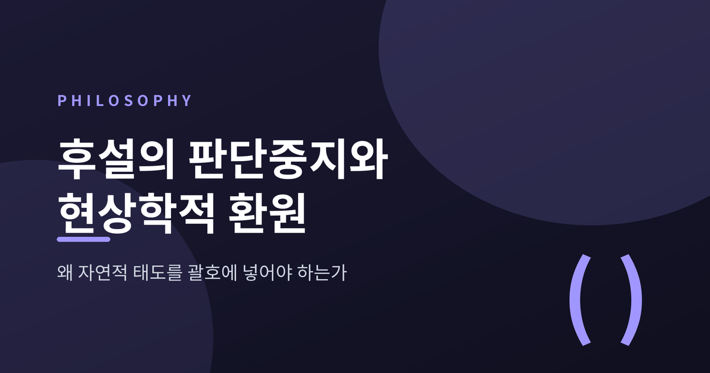
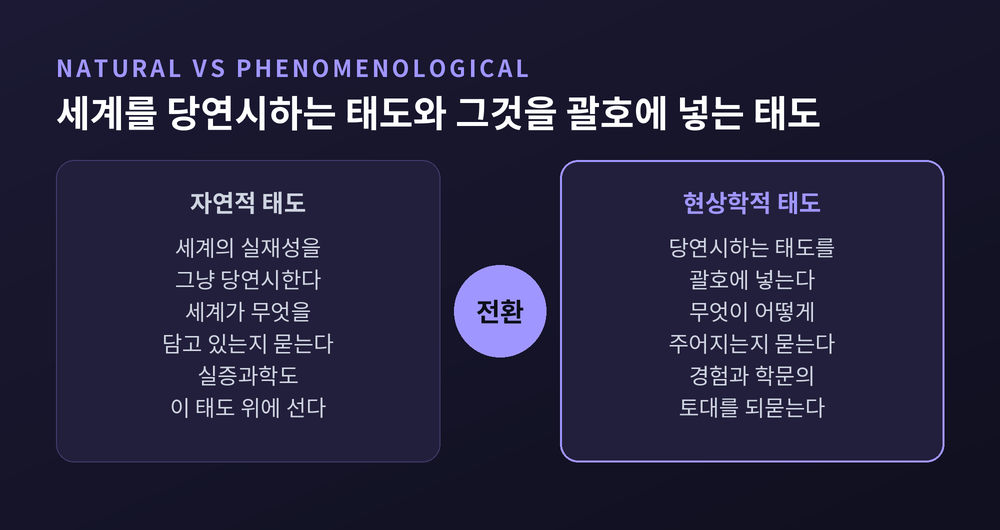
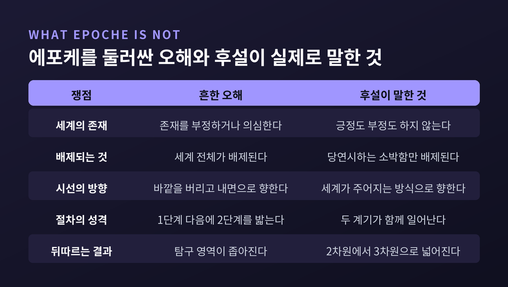
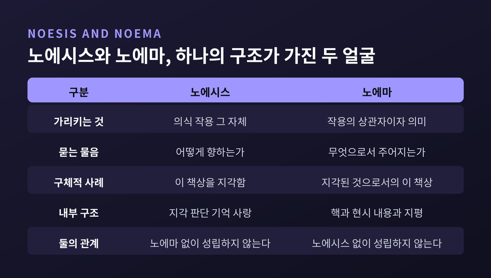
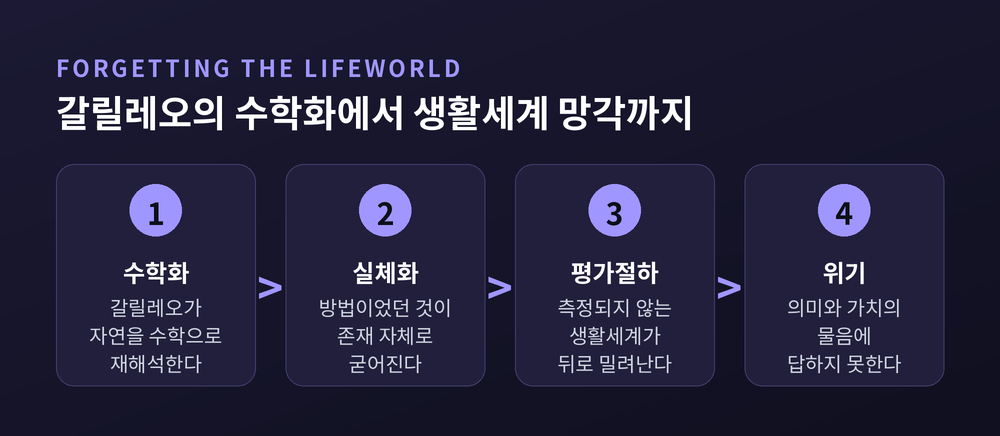
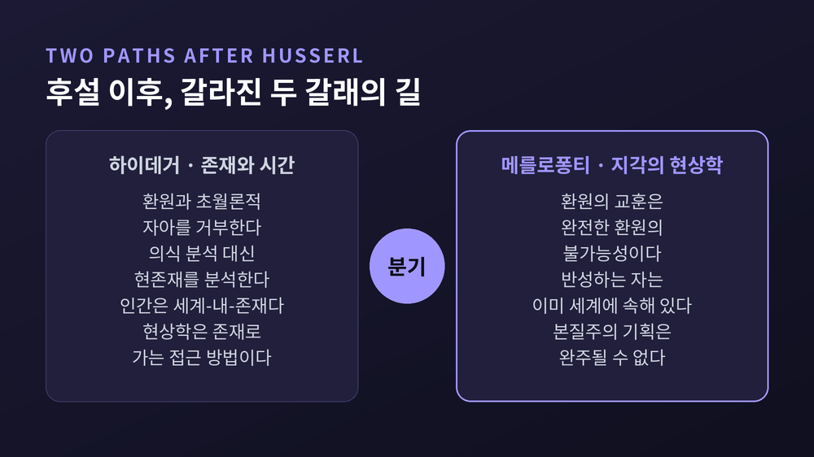

세 줄 요약
이번 글에서는 에드문트 후설의 현상학을 판단중지라는 한 가지 물음을 축으로 정리해 보겠습니다. 왜 굳이 세계를 괄호에 넣어야 하는지, 괄호를 치고 나면 무엇이 남는지를 순서대로 따라가 보겠습니다.
후설은 1859년 4월 8일 모라비아 프로스니츠에서 태어나 1938년 4월 27일 프라이부르크에서 세상을 떠났습니다. 할레에서 1887년부터 가르쳤고, 1901년 괴팅겐으로, 1916년 프라이부르크로 옮겨 1928년까지 강단에 섰습니다. 빈에서 프란츠 브렌타노의 강의를 들은 것은 1884년부터 1886년까지의 일입니다.
그가 평생을 걸고 물은 것은 하나입니다. 학문은 무엇 위에 서 있는가.
기하학에서 정리는 공리 위에 세워집니다. 그렇다면 자연과학의 공리는 무엇일까요. 후설의 대답은 이렇습니다. 과학자가 주어진 것으로 삼는 것은 자연 세계와 그 안의 사물들이며, 그 사물과 세계 자체는 한 번도 물어지지 않은 채 논리적 암반으로 취급됩니다. 과학자는 세계를 자기 공리로 삼는다는 것입니다.
이렇게 세계의 실재성을 그저 당연한 것으로 받아들이는 태도를 후설은 자연적 태도라고 불렀습니다. 이 태도는 너무 근본적이고 깊이 뿌리박혀 있어서, 우리는 그것을 태도라고 인식조차 하지 못합니다. 후설의 조교였던 오이겐 핑크는 이를 "받아들여짐 속의 사로잡힘"이라고 표현했습니다. 우리는 몸, 문화, 중력, 일상 언어, 논리를 아무 물음 없이 받아들이며 삽니다.

1911년 후설은 「엄밀학으로서의 철학」을 발표합니다. 여기서 그는 자연주의의 자기모순을 짚습니다.
논증은 간명합니다. 자연과학은 경험과학이므로 경험적 사실만 다룹니다. 그런데 형식논리의 법칙을 '사고의 자연법칙'으로 자연화하면, 그 법칙은 귀납으로만 정당화됩니다. 귀납은 법칙의 성립이 아니라 개연성만 정당화합니다. 그렇다면 논리 법칙은 예외 없이 단순한 개연성으로 전락합니다. 그러나 순수 논리의 법칙이 아프리오리하게 타당하다는 것보다 더 분명한 사실도 없습니다. 그래서 후설은 적었습니다. 자연주의는 스스로를 반박한다고.
여기서 오해가 없어야 합니다. 후설은 과학을 반대하지 않았습니다. 그는 근대적 삶에 과학의 이념보다 더 강력하고 거스를 수 없이 전진하는 이념은 없다고 썼습니다. 그가 문제 삼은 것은 과학이 지은 집의 구조나 품위가 아니라, 그 집이 딛고 선 토대였습니다. 어떤 학문에 내재한 수수께끼를 그 학문 자체의 전제로 풀려는 시도는 순환논증일 뿐입니다.
『이념들 I』이 나온 것은 1913년입니다. 여기서 판단중지, 곧 에포케가 처음 본격적으로 정식화됩니다. 에포케는 '삼감'을 뜻하는 그리스어입니다. 후설의 표현으로는 자연적 태도의 본질에 속하는 일반 정립을 작동 밖에 놓고, 그 정립이 존재와 관련해 포괄하는 모든 것을 괄호치는 일입니다.
가장 흔한 오해가 여기서 생깁니다. 세계에 대한 믿음을 유보하는 것이 세계의 존재를 부정하는 것으로 읽히는 것입니다.
그렇지 않습니다. 에포케는 세계 존재에 대한 긍정도 부정도 아닙니다. 배제되는 것은 오직 소박함 하나입니다. 세계를 당연시하면서 의식의 기여를 무시하는 그 소박함 말입니다. 후설은 1931년의 한 강의에서 이 점을 거듭 강조했습니다.
"세계는 에포케의 결과로 상실되지 않는다."
그는 오히려 에포케를 상관관계적 판단들의 발견으로 이끄는 길이라고 불렀습니다. 소박한 세계 탐구에서 세계의 주어짐에 대한 반성적 탐구로 옮겨 가는 일은 세계에서 돌아서는 것이 아닙니다. 세계를 비로소 철학의 물음거리로 만드는 전환입니다. 『유럽 학문의 위기』에서 후설은 이 전환을 2차원의 삶에서 3차원의 삶으로 넘어가는 일에 비유했습니다. 시야를 좁히는 것이 아니라 넓히는 움직임이라는 뜻입니다.

현상학적 환원은 흔히 두 단계 절차로 소개됩니다. 정확한 설명은 아닙니다.
핑크는 『제6 데카르트적 성찰』에서 에포케와 본래적 환원이 현상학적 환원의 두 내적 기본 계기이며, 서로를 요구하고 서로를 조건 짓는다고 썼습니다. 여기서 '계기'는 논리적 계기이지 시간적 순서가 아닙니다. 바닥의 낡은 왁스를 먼저 벗기고 새 왁스를 나중에 바르는 식의 두 단계가 아닙니다. 세계를 괄호치는 움직임과 자기 자신에게로 되돌아가는 움직임은 함께 일어납니다.
그렇다면 본래적 환원이란 무엇일까요. 핑크의 정의는 이렇습니다. 받아들여짐 속의 사로잡힘을 깨부수고, 그 받아들여짐을 비로소 받아들여짐으로서 인식하는 모든 초월론적 통찰입니다.
에포케가 무비판적 수용에서 우리를 풀어내는 방법이라면, 본래적 환원은 그 수용을 수용으로서 알아보는 일입니다. 핑크는 이 '봄'이 지식으로 아는 것과 다르다고 덧붙입니다. 카펫 위의 진흙을 남이 묻힌 줄 알았다가 자기가 묻힌 것임을 발견할 때의 그 봄에 가깝다고 말입니다.
한 가지 덧붙이면, 환원으로 가는 길은 하나가 아닙니다. 후설은 생애에 걸쳐 데카르트적 길, 심리학적 길, 존재론적 길을 개발했습니다. 데카르트적 길은 세계를 밀어내고 단번에 초월론적 자아로 도약합니다. 존재론적 길은 생활세계를 거쳐 훨씬 느린 걸음으로 갑니다. 개별 대상의 실존을 괄호치고 자유 상상적 변경을 통해 본질을 뽑아내는 형상적 환원은, 이와는 또 구별되는 별개의 작업입니다.
후설의 인식론은 아주 평범해 보이는 사실 하나에서 출발합니다. 모든 의식은 무엇에 '대한' 의식이라는 사실입니다. 이것이 지향성입니다.
지향성이라는 발상 자체는 브렌타노에게 이미 있었습니다. 그래서 후설을 브렌타노의 후계자로 읽는 시선이 오래 있었습니다. 정작 후설 본인은 그 독법을 강하게 거부했습니다. 1937년 6월 마빈 파버에게 보낸 편지에서 그는, 자신이 브렌타노의 공동 작업자라고 너무 오래 스스로를 속였다고 적었습니다. 브렌타노의 심리학은 지향성의 학문과 거리가 멀고, 지향성의 고유한 문제들은 그에게 결코 떠오르지 않았다는 것입니다.
무엇이 달랐을까요. 후설은 상관하는 대상을 함께 기술하지 않고서는 어떤 의식 경험도 기술할 수 없다고 보았습니다. 이 책상에 대한 지각은, 이 책상을 지각된 그대로 무엇으로서 기술할 때에만 기술됩니다.
후설은 이를 상관관계의 아프리오리라고 불렀고, 『논리 연구』의 결정적 성취로 꼽았습니다. 그는 이 돌파가 1898년 무렵 자신을 너무나 깊이 뒤흔들어, 이후 평생의 작업 전체가 이 과제에 지배되어 왔다고 회고했습니다.
시선의 방향이 바뀝니다. 예전엔 세계가 무엇을 담고 있는지를 물었습니다. 이제는 그것이 어떻게 주어지는지를 묻습니다.
『이념들 I』에서 후설은 지향적 작용의 두 면에 이름을 붙입니다.
노에시스는 의식 작용 자체입니다. 지각하고 판단하고 기억하고 사랑하는 주관적 과정, 곧 경험의 '어떻게'입니다. 노에마는 그 작용의 상관자입니다. 저기 바깥에 놓인 대상 자체가 아니라, 의식 안에서 사념되고 주어진 그대로의 대상입니다. 지각된 것으로서의 지각된 대상이라고 말해도 좋겠습니다.
둘은 따로 떨어져 있지 않습니다. 노에마적 계기 없이 사유되는 노에시스적 계기는 없습니다. 노에마의 구조에는 핵과 현시적 내용뿐 아니라, 동일한 하나의 대상을 경험하는 다른 가능한 방식들을 가리키는 지평이 함께 들어 있습니다.

여기서 후설은 데카르트와 칸트로부터 갈라섭니다. 그가 보기에 의식과 대상의 구분은 애초에 없습니다. 핑크가 신칸트주의자들을 향해 던진 논점이 선명합니다. 우리가 세계를 생각할 때, 그 세계는 언제나 그것을 생각하는 우리를 이미 포함하고 있는 세계라는 것입니다.
다만 노에마가 정확히 무엇인지는 지금도 논쟁 중입니다. 다그핀 푈레스달에서 시작된 '서부 해안' 해석은 노에마를 프레게의 뜻에 준하는 추상적 의미로 봅니다. 작용과도 대상과도 구별되며, 지향적 관계를 매개하는 무엇이라는 것입니다. 반면 아론 구르비치에서 소콜로프스키와 드러먼드로 이어지는 '동부 해안' 해석은 다르게 봅니다. 사념된 그대로의 대상과 사념되는 대상은 두 개의 존재자가 아니라 하나의 동일한 것에 대한 두 관점이라는 것입니다. 이 다툼은 20세기 말 정점에 달했고, 아직 어느 쪽으로도 정리되지 않았습니다.
만년의 후설은 다른 방향으로 물음을 밀고 갑니다. 1935년 5월 7일과 10일, 그는 빈 문화협회에서 「유럽 인간성의 위기와 철학」이라는 제목으로 강연했습니다. 같은 해 11월에는 프라하에서 강연했습니다. 이 작업이 『유럽 학문의 위기와 초월론적 현상학』으로 이어집니다. 1부와 2부가 1936년에 발표되었고, 부록을 포함한 지금의 형태는 1954년에야 나왔습니다.
여기서 등장하는 개념이 생활세계입니다.
생활세계는 우리가 살고 편안함을 느끼는 세계입니다. 마실 컵, 먹을 숟가락, 앉을 의자, 오르거나 그늘을 구할 나무가 있는 세계입니다. 역사적으로 문화적으로 형성된 세계이며, 우리는 몸을 가진 주체로서 그 안에 정박되고 사회화됩니다.
후설의 진단은 갈릴레오를 향합니다. 갈릴레오의 위대한 업적은 자연의 수학화하는 재해석이었습니다. 문제는 그다음입니다. 정량화하는 이론적 추상과 이념화의 방법이 매우 빠르게 존재론적으로 실체화되었습니다. 존재한다는 것이 측정 가능하다는 것과 같아졌습니다. 후설의 표현을 그대로 옮기면, 사람들은 사실은 하나의 방법인 것을 참된 존재로 여기기 시작했습니다.

이 망각이 낳은 것이 인간 경험으로부터의 소외이고, 가치와 의미 같은 물음에 답하지 못하는 무능입니다. 후설은 참된 실재가 모든 경험적 증거를 초월하는 무대 뒤 세계와 동일시된다는 발상을 신화 만들기라고 불렀습니다.
그렇다고 그가 과학을 낮춰 본 것은 아닙니다. 『이념들 I』의 문장이 그의 태도를 잘 보여 줍니다. 실제로 자연과학이 말할 때 우리는 기꺼이 제자로서 듣지만, 자연과학자가 말한다고 해서 언제나 자연과학이 말하는 것은 아니라는 것입니다. 물리학자가 관찰하고 손에 쥐고 저울에 올리는 그 물리적 사물이, 바로 그 사물이 무게와 온도와 전기저항이라는 술어의 주어가 됩니다. 실험을 계획할 때, 계측기를 읽을 때, 결과를 동료와 토론할 때, 공유된 생활세계는 언제나 작동 중입니다.
후설이 과학 이론이 상정하는 관찰 불가능한 존재자들을 최종적으로 어떻게 보았는지는 지금도 해석이 갈립니다. 그가 도구주의자였는지를 두고 연구자들의 판단이 엇갈립니다. 다만 생활세계가 과학 연구의 토대이자 의미 기반으로 남는다는 데는 대체로 의견이 모입니다.
후설이 뿌린 씨앗은 제자들에게서 전혀 다른 방향으로 자랐습니다.
마르틴 하이데거는 1927년 『존재와 시간』을 후설에게 우정과 존경으로 헌정했습니다. 그러면서도 후설의 현상학적 환원 방법과 초월론적 자아 개념은 거부했습니다. 그가 아낀 것은 초기의 『논리 연구』였고, 초월론적 주관성으로 향한 후기의 전회와 데카르트주의에는 끌리지 않았습니다. 세계의 초월론적 구성이 자연주의적 설명으로 밝혀질 수 없다는 데까지는 스승과 같습니다. 다만 그 길이 의식에 대한 기술적 분석이 아니라 현존재 분석이라고 보았습니다. 인간은 세계-내-존재로 이해되어야 하며, 우리 행위에 의미를 주는 실천적이고 사회적인 맥락으로 구성된다는 것입니다. 그에게 현상학은 초연한 기술이 아니라 존재로 가는 접근 방법이었습니다.
모리스 메를로퐁티는 다른 자리에서 갈라섭니다. 1945년 『지각의 현상학』 서문에서 그는 환원의 가장 중요한 교훈이 완전한 환원의 불가능성이라고 썼습니다. 환원을 수행하는 과정에서 우리는 반성하는 자가 이미 반성되는 세계에 내속해 있음을 발견하기 때문입니다. 초월론적 자아의 영역으로 완전히 되돌아갈 수 없는 것은, 우리가 마주하는 것이 세계의 동기 없는 솟아오름이기 때문입니다. 이 선언은 후설의 본질주의적 기획이 끝내 완성될 수 없음을 함축합니다.

한 가지 더 기록해 둘 일이 있습니다. 프라이부르크대는 1933년 1월 23일 후설의 박사학위 50주년을 성대히 기념했습니다. 그리고 같은 해 4월 6일 그의 교수 자격을 박탈했습니다. 1938년 그가 세상을 떠난 뒤, 루뱅대 출신의 헤르만 레오 판 브레다 신부가 약 4만 페이지에 이르는 수고를 나치의 파괴로부터 구해 냈습니다. 그해 10월 27일 루뱅에 후설 아카이브가 세워졌습니다. 오늘 우리가 후설을 읽을 수 있는 것은 그 구출 덕분입니다.
정리하면 이렇습니다.
에포케는 세계를 지우는 지우개가 아닙니다. 세계를 처음으로 물음의 대상으로 세우는 괄호입니다. 자연적 태도를 괄호에 넣어야 하는 이유는, 그 태도가 틀려서가 아니라 그것이 태도라는 사실 자체가 보이지 않기 때문입니다. 보이지 않는 것은 검토될 수 없습니다.
후설의 기획이 완결되었다고 말하기는 어렵습니다. 하이데거는 방법 자체를 버렸고, 메를로퐁티는 완주가 불가능하다고 선언했습니다. 노에마가 무엇인지조차 아직 합의되지 않았습니다.
그럼에도 남는 물음이 하나 있습니다 — 지금 내가 세계라고 부르는 것은 어디까지가 세계이고, 어디부터가 내 태도인가.
이 물음을 한 번이라도 진지하게 던져 보신 적이 있다면, 이미 괄호는 열린 셈입니다.